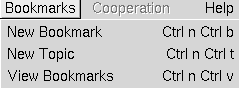
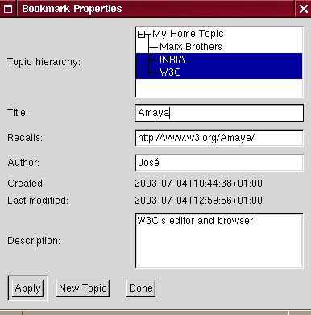
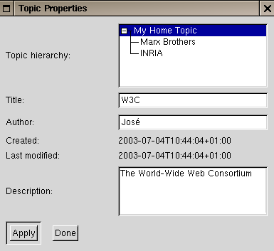
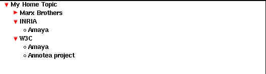
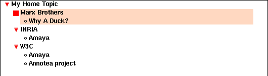

NOTE: This is a beta version of the Annotea bookmarks implementation in Amaya. The User Interface needs more work and it only works for the moment on Linux.
Beginning from Version 8.1, Amaya supports the Annotea Bookmark schema. Follow the link for a better description of this RDF schema. This document describes the user interface and known bugs of its implementation inside Amaya.
The user interface is very similar to that found in other browsers and it allows you to do most of the same operations. One notable difference is that the Annotea Bookmarks schema uses the term Topic rather than Folder. The reason for this choice is that the organization of this kind of bookmarks os not limited to strict hierarchies, but can be extended to full graphs.
The user can access the bookmarks functionality by means of the Bookmarks menu in the menu bar:

The operations that this menu proposes are:
We will examine each of these operations in the following sections.
When you want to bookmark a given document that you're browsing, invoke the New Bookmark function from the menu bar. This will open the Bookmark Properties widget:

A bookmark can belong to one or more topics. The Topic Hierarchy field displays the current topics that you have and lets you select the topics where you want to classify your bookmark. For example, the above figure shows a bookmark tha tbelongs to the INRIA and W3C Topics. Note that a bookmark must always belong to a topic. Amaya will refuse to create the bookmark if this is not the case. You can create a new topic from this widget by using the New Topic button, at the bottom of the widget.
The Title field gives the title of the bookmark. If the document you're bookmarking is written in a markup language that Amaya understand (e.g., XHTML, HTML, ...) and if this document has recognizable title element, the value of this element will be used for this field. Otherwise, the URL of the document will be shown.
The Recalls field gives the URL of the document that this bookmark points to.
The Created and Last Modified fields give the time of creation and of last modification of the bookmark, respectively.
The Description field allows you to give an optional text describing the bookmark.
The Apply button allows you to add the bookmark to the bookmark file or, if you're modifying it, to update it.
The New Topic button opens the Topics Properties widget to let you create a new topic.
The Done button closes the widget and discards any changes that were not saved.
When you want to create a new topic, invoke the New Topic function from the menu bar. This will open the TopicProperties widget:

In this implementqtion, topics have to have a hierarichal organization. That is, each topic has a parent topic and can have sub topics stored under it. By default, there is a root topic, called Home Topic, that is automatically generated. All new topics that you will be created will be stored under it.
The Topic Hierarchy field displays the current topics that you have and lets you choose the topic under which you want to store the new topic. For example, the figure shows the W3C topic that is stored under the Home Topic.
All the other fields in this widget have the same meaning as those described in the Bookmark Widget, in the precedent setion.
The Apply button allows you to add the topic to the bookmark file or, if you're modifying it, to update it.
The Done button closes the widget and discards any changes that were not saved.
When you want to view and use your bookmark file, invoke the View Bookmarks function from the menu bar. This will open a new window displaying your bookmarks and topics:

In the bookmark view, topics entries are prefixed with either a or a icon. The other entries are bookmarks. You can either activate entries by clicking on the left mouse button or view the properties of an entry by using the right mouse button. If you're viewing the properties of an entry, you can also edit them and save the modifications.
For a bookmark entry, the left mouse button will open a new window displaying the document that the bookmark recalls. For a topic entry, the left mouse button will either collapse or expand its contents. The icon represents a collapsed topic entry and the icon an expand topic entry.
In order to delete an entry, you have to put the cursor in the entry and
select it by pressing the F2 key:

Once the entry is selected, you just need to press the Delete key to erase it. If you select a topic entry, all of its children will be also selected and deleted with this operation. Note that for bookmarks that belong to multiple topics, deleting its entry from a topic, only destroys one RDF property that says that this bookmark belongs to that topic. In order to completely delete a bookmark that belongs to multiple topics, you will need to delete its entry in all those topics. Alternatively, you can first edit its properties and make it belong to only one topic, then delete it.
The bookmarks are stored in the Amaya preferences directory under the name bookmarks.rdf. If you edit this file and add additional properties, they will be preserved. This is due to our using Redland for parsing and querying the RDF model. For more information, see the Annotea project home page.